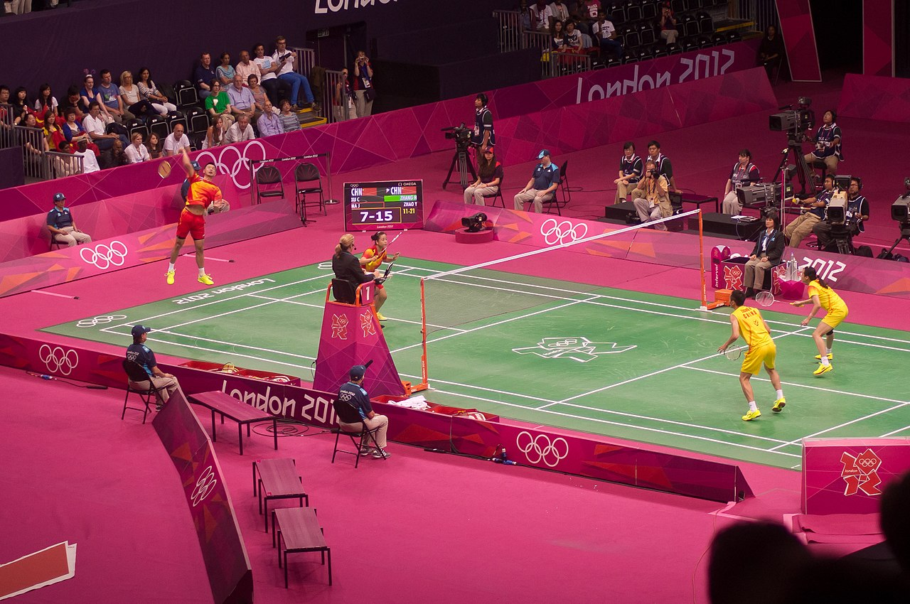
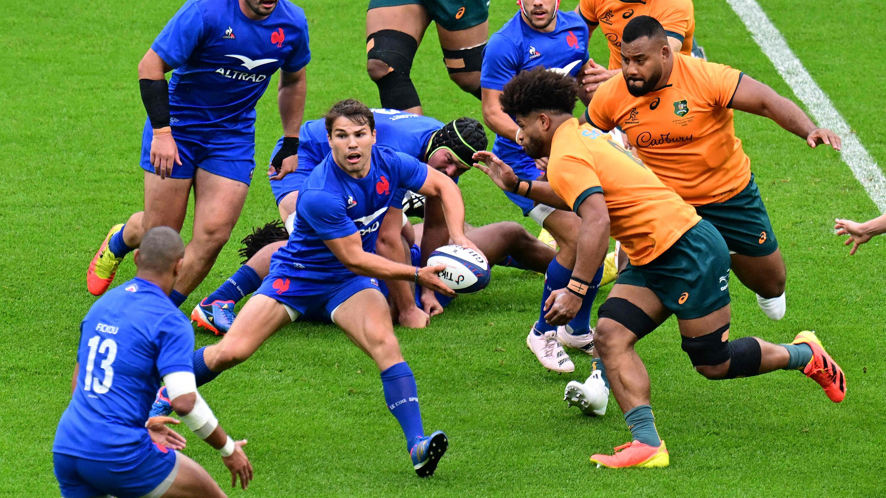

Soccer
Badminton
Rugby

Basketball
Hello there reader.
My name is Shourya Narayana and I like coding as well as playing games like roblox, geometry dash and others alike.
I generally don't do too much coding and rather only code when I have classes for it or when I just feel bored.
I don't know that much about coding and I'm actually writing this because I'm currently learning about website building.
I have quite a few friends that I like playing with and I generally enjoy being with them and playing with them.
I hope this is not too long when I debug test, which in hindsight, it probably is gonna be very long but I might as well keep writing.
Anyways, I hope you have a fun time trying to navigate this website, if it will have any links that is.
I am also an avid gamer and I like playing quite a few games such as Roblox, Minecraft and some steam games that I have bought over the years
I like playing games on Roblox such as Dummies vs Noobs, Pressure, DCO's and much more.
I also have grudges against some games like Dummies vs noobs the game I just mentioned and the reason why is because of two things.
One: Cloaker spam.
Two: The games difficulty scaling and just general difficulty.
The first point that being cloaker spam, just means that one enemy from the game aka the cloaker is spawned way too much during the rounds.
The second point being the difficulty scaling just means the way the game sends enemies to you.
There's way too many enemies on the later waves making them extremly difficult and also kind of rage inducing.
Some of these waves being wave 4, 5 and 6 as they are the most annoying waves at least for me.
The reason why is beacuse I might be focusing on some other really annyoing enemy like the APU and then bam I get crubstomped to the ground by a cloaker.
It's just really annoying dieing to an enemy that takes five bullets kill.
Anyways, that's all I have to say for the game right now, I still have to actually solo it on my own and then I could give some more information on the game and its enemies but apart from that theres nothing much. Bye i guess.
Soccer |
 Badminton |
 Rugby |
Basketball |